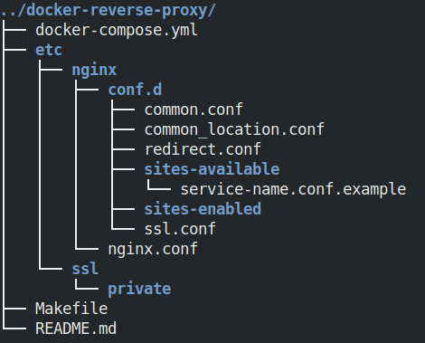
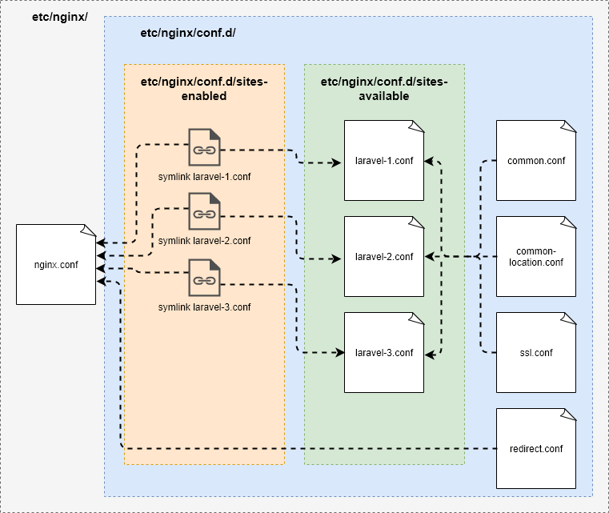

Reverse proxy локальный
Как настроить reverse proxy с Docker, Nginx и Mkcert
Нам понадобятся настроенный особым образом Nginx веб сервер и утилита Mkcert для генерации локально-доверенных сертификатов с собственным центром сертификации. Чтобы можно было сразу посмотреть reverse proxy в действии, нужно уже иметь пару-тройку приложений позади него. Как развернуть Laravel приложение с Docker контейнерами на локальном компьютере, смотрим здесь. Nginx веб сервер создадим и настроим в контейнере, а утилиту Mkcert установим непосредственно на локальном компьютере.
Установка утилиты Mkcert
Начнем с установки certutil. Эта утилита работает из командной строки и
может создавать и модифицировать сертификаты и базу данных с ключами.
sudo apt-get update
sudo apt install wget libnss3-tools
Теперь загрузим бинарный пакет mkcert из GitHub на
момент написания статьи последняя версия v1.4.1
export VER="v1.4.1"
wget -O mkcert https://github.com/FiloSottile/mkcert/releases/download/${VER}/mkcert-${VER}-linux-amd64
Сделаем файл исполняемым и поместим его в директорию /usr/local/bin
chmod +x mkcert
sudo mv mkcert /usr/local/bin
На этом установка завершена. Cоздадим локальный CA (Certificate Authority)
mkcert -install
теперь мы можем простой командой mkcert name-1.local name-2.local ...
сгенерировать SSL certificates для любого количества локальных доменов, но
пока отложим это действие. Дело в том, что эта команда имеет ряд опций, указав которые мы
можем задать нужную нам директорию и имена файлов SSL certificates. Директорию
и имена файлов мы определим в настройках reverse proxy.
Reverse proxy как это работает
Reverse proxy это обычный Nginx, который слушает стандартные порты "80" и "443", но настроен таким образом, чтобы транслировать запросы приложениям позади него, в соответствии с доменом. А также, преобразовывать все HTTP запросы в HTTPS и проверять сертификаты. Таким образом, в центре внимания оказываются конфигурационные файлы.
Клонируем reverse proxy из GitHub репозитория
cd ~/my-projects
git clone https://github.com/acwstudio/nginx-reverse-proxy-ssl-local.git docker-reverse-proxy
cd docker-reverse-proxy

